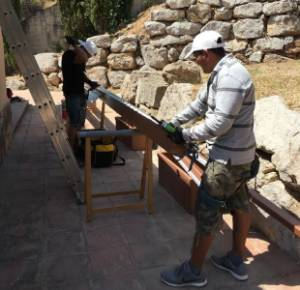
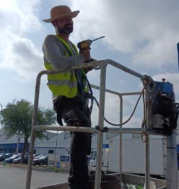
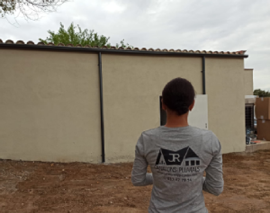
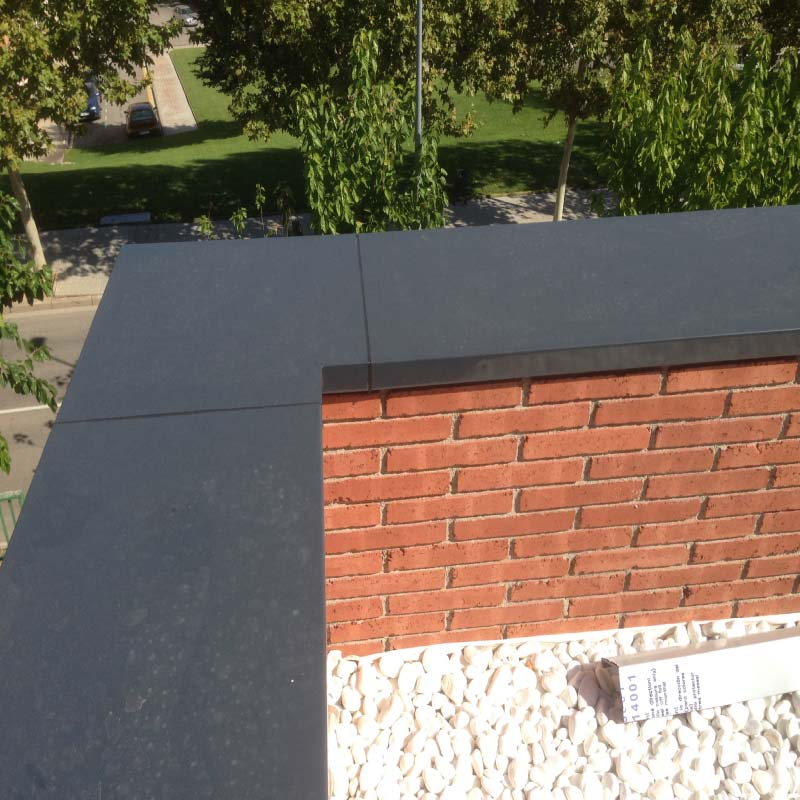

Servicios
Nuestros productos están disponibles en materiales como metal, PVC y cerámica, garantizando durabilidad y funcionalidad.

Fabricación
💧 Diseño personalizado: nuestros canalones se adaptan perfectamente a las medidas de cada fachada, ofreciendo opciones que se integran con la estética de tu propiedad.
💧 Fabricación en tramos continuos: sin empalmes ni juntas, aseguramos una mayor durabilidad, resistencia y un acabado impecable.
💧 Detalles que marcan la diferencia: ofrecemos remates de aluminio en diversos modelos para añadir un toque único y personalizado.

Instalación
💧 Garantía total en todos nuestros trabajos: aseguramos la instalación sin fugas y la protección contra el deterioro de fachadas.
💧 Previene problemas futuros: evita humedades, grietas en la fachada y la degradación de la pintura.
💧 Resultados profesionales que protegen y prolongan la vida útil de tu hogar o negocio.

Mantenimiento
💧 Prevén atascos y daños: eliminamos suciedad acumulada como hojas secas y residuos, evitando problemas de humedad y deterioro en tu propiedad.
💧 Protege tu inversión: un buen mantenimiento evita daños a la pintura, grietas en la fachada y costosos arreglos futuros.
💧 Restauración y pintura de fachadas: devolvemos la estética y resistencia a tus superficies exteriores.

Cubremueros
💧 Fabricamos e instalamos cubremuros en aluminio lacado en diversos colores a medida de la fachada, sin empalmes, juntas, en tramos continuos.
💧 Somos expertos en instalar y fabricar a pie de obra. Estamos comprometidos con el medio ambiente todos nuestros materiales son 100% reciclables.
Gracias por su confianza!
Para todo tipo de preguntas, comentarios e inquietudes; por favor llámanos: +34 633477914
Servicios de Canalones y Bajantes
La instalación de canalones y bajantes es fundamental para proteger tu vivienda de daños estructurales, humedades y filtraciones. Los canalones se colocan en los bordes o zonas laterales de los tejados, canalizando el agua de lluvia hacia una zona segura. Ofrecemos soluciones personalizadas según tus necesidades.
Sostenibilidad
Somos especialistas en fabricar canalones directamente en la obra, brindando un servicio rápido y eficiente en toda la provincia. Además, estamos comprometidos con el medio ambiente: todos nuestros materiales son 100% reciclables, contribuyendo a un futuro más sostenible.